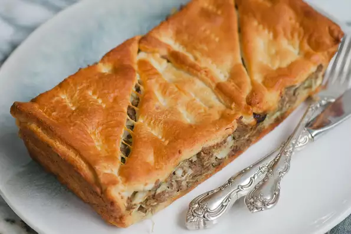

Cazerolle recipe
Description for Cazerolle

is a variety of a large, deep pan or bowl used for cooking a variety of dishes in the oven;
it is also a category of foods cooked in such a vessel. To distinguish the two uses, the pan can be called a "casserole dish" or "casserole pan",
whereas the food is simply "a casserole".
ingredients
-
2 tablespoons butter
1 pound lean ground beef
-
½ cup chopped onion
-
1 teaspoon salt
-
¼ teaspoon ground black pepper
-
⅛ teaspoon garlic powder
-
2 cups chopped cabbage
-
1 (10 ounce) can low-sodium cream of mushroom soup
-
2 (8 ounce) packages refrigerated crescent rolls
-
1 cup shredded Cheddar cheese
-
1 cup shredded mozzarella cheese
Procedure
-
Step 1
Preheat the oven to 350 degrees F (175 degrees C).
-
Step 2
Melt butter in a deep skillet over medium heat.
Cook and stir ground beef until browned, about 5 minutes.
-
Step 3
Add onion, salt, pepper, and garlic powder to the skillet; cook until onion softens,
3 to 5 minutes.
Add cabbage and cook until tender, about 5 minutes. Stir mushroom soup into the skillet.
-
Step 4
Open crescent roll packages and unroll dough.
Press 8 pieces into the bottom of a 9x13-inch baking dish. Pour beef mixture on top.
Cover with Cheddar and mozzarella cheeses. Place remaining 8 pieces dough on top.
-
Step 5
Bake in the preheated oven until top is golden brown and filling is bubbling, 20 to 30 minutes.